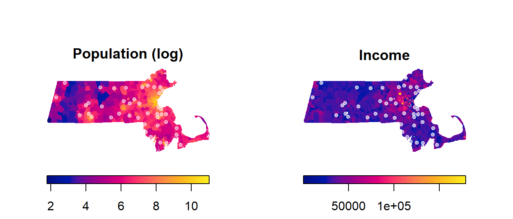

# Load packages
# Note that the rgdal package should also be installed on your computer
# even though it's not explicitly loaded in the R code
library(spatstat)
library(maptools)
library(sf)
library(raster)
# Read state polygon data
s <- st_read("MA.shp")
w <- as.owin(s)
w.km <- rescale(w, 1000)
# Read Walmart point data
s <- st_read("Walmarts.shp")
p <- as.ppp(s)
p.km <- rescale(p, 1000)
marks(p.km) <- NULL
Window(p.km) <- w.km
# Read population density raster
img <- raster("pop_sqmile.tif")
pop <- as.im(img)
pop.km <- rescale(pop, 1000)
pop.km.log <- log(pop.km)
# Read median income raster
img <- raster("median_income.tif")
inc <- as.im(img)
inc.km <- rescale(inc, 1000)
inc.km[] <- as.double(inc.km[]) # Convert integer income values to double valuesPPM: Exploring 1st order effects
Data for this tutorial can be downloaded from here. Don’t forget to unzip the files to a dedicated folder on your computer.
Don’t forget to set the R session to the project folder via Session >> Set Working Directory >> Choose Directory.
Loading the data into R
First, we’ll load the point pattern dataset, then we’ll load two different raster datasets that will represent two separate 1st order effects we suspect may help explain the distribution of stores within the study extent.
You’ll note that we are converting the income raster from integer data type to double (inc[] <- as.double(inc[])). This is done to satisfy the effectfun() function that will be used later in this workflow–that function does not accept integer rasters.
You’ll also note in the above chunk of code that we are transforming population density values to logged values (log(pop.km)) because of the skewed nature of the population raster. This may help improve the model performance. Such transformation techniques are not uncommon in the field of statistics.
A quick way to check the distribution of raster pixel values is to plot the histogram as follows:
# Plot original raster values
hist(pop.km)
# Plot log-transformed raster values
hist(pop.km.log)
The latter distribution of values is better suited for the ppm technique adopted in this exercise.
Let’s plot each raster with the Walmart point overlay. We’ll use R’s base plotting environment.
plot(pop.km.log, ribside="bottom", main="Population (log)")
plot(p.km, pch = 20, col=rgb(1,1,1,0.5), add=TRUE)
plot(inc.km, ribside="bottom", main="Income")
plot(p.km, pch = 20, col=rgb(1,1,1,0.6), add=TRUE)
Modeling point density as a function of two competing covariates: population density and income.
We will first develop two different models that we think might define the Walmart’s point intensity. Recall that intensity is a property of the underlying “process” (one being defined by the distribution of population density and the other being defined by the distribution of income)–this differs from density which is associated with the observed pattern. These models are represented in our R script by two raster layers: a population raster and an income raster. These models will be alternate models that we’ll denote as Mpop and Minc in the script. The models’ structure will follow the form of a logistics model, but note that the models can take on many different forms and different levels of complexity.
We’ll also create the null model, Mo, which will assume a spatially uniform (homogeneous) covariate. In other words, Mo will define the model where the intensity of the process is assumed to be the same across the entire study extent.
Mpop <- ppm(p.km ~ pop.km.log) # Population modelWarning: Values of the covariate 'pop.km.log' were NA or undefined at 3.4% (17
out of 504) of the quadrature points. Occurred while executing: ppm.ppp(Q =
p.km, trend = ~pop.km.log, data = NULL, interaction = NULL)Minc <- ppm(p.km ~ inc.km) # Income modelWarning: Values of the covariate 'inc.km' were NA or undefined at 3.2% (16 out
of 504) of the quadrature points. Occurred while executing: ppm.ppp(Q = p.km,
trend = ~inc.km, data = NULL, interaction = NULL)Mo <- ppm(p.km ~ 1) # Null modelLet’s explore the model parameters. First, we’ll look at Mpop.
MpopNonstationary Poisson process
Log intensity: ~pop.km.log
Fitted trend coefficients:
(Intercept) pop.km.log
-10.111647 0.625803
Estimate S.E. CI95.lo CI95.hi Ztest Zval
(Intercept) -10.111647 0.7933272 -11.6665393 -8.5567540 *** -12.745872
pop.km.log 0.625803 0.1127980 0.4047229 0.8468831 *** 5.547996
Problem:
Values of the covariate 'pop.km.log' were NA or undefined at 3.4% (17 out of
504) of the quadrature pointsThe values of interest are the intercept (whose value is around -10.1) and the coefficient pop.km.log (whose value is around 0.63). Using these values, we can construct the mathematical relationship (noting that we are using the logged population raster and not the original population raster values):
\[
Walmart\ intensity(i)= e^{−10.1 + 0.63\ log(population\ density_i)}
\] The above equation can be interpreted as follows: if the population density is 0, then the Walmart intensity is \(e^{−10.1}\) which is very close to 0. So for every unit increase of the logged population density (i.e. log of one person per square mile), there is a \(e^{0.63}\) increase in Walmart intensity.
Likewise, we can extract the parameters from the Minc model and construct its equation.
MincNonstationary Poisson process
Log intensity: ~inc.km
Fitted trend coefficients:
(Intercept) inc.km
-5.576942e+00 -1.654792e-05
Estimate S.E. CI95.lo CI95.hi Ztest
(Intercept) -5.576942e+00 5.258426e-01 -6.607574e+00 -4.546309e+00 ***
inc.km -1.654792e-05 1.490546e-05 -4.576209e-05 1.266624e-05
Zval
(Intercept) -10.605725
inc.km -1.110192
Problem:
Values of the covariate 'inc.km' were NA or undefined at 3.2% (16 out of 504)
of the quadrature points\[ Walmart\ intensity(i) = e^{−5.58\ −1.66e^{−5}\ Income(i)} \] Note the negative (decreasing) relationship between income distribution and Walmart density.
Next, we’ll extract the null model results:
MoStationary Poisson process
Intensity: 0.002086305
Estimate S.E. CI95.lo CI95.hi Ztest Zval
log(lambda) -6.172361 0.1507557 -6.467836 -5.876885 *** -40.94281This gives us the following equation for the homogeneous process:
\[ Walmart\ intensity(i) = e^{−6.17} = 0.00209 \]
which is nothing more than the number of stores per unit area (44 stores / 21,000km2 = 0.00209).
Plotting the competing models
OP <- par(mfrow = c(1,2), mar = c(4,4,2,1)) # This creates a two-pane plotting window
plot(effectfun(Mpop, "pop.km.log", se.fit = TRUE), main = "Population",
ylab = "Walmarts per km2", xlab = "Population density", legend = FALSE)
plot(effectfun(Minc, "inc.km", se.fit = TRUE), main = "Income",
ylab = "Walmarts per km2", xlab = "Income", legend = FALSE)
par(OP) # This reverts our plot window back to a one-pane windowNote the difference in relationships between the two models. In the first plot, we note an increasing relationship between Walmart intensity and population density; this is to be expected since you would not expect to see Walmart stores in underpopulated areas. In the second plot, we note an inverse relationship between Walmart intensity and income—i.e. as an area’s income increases, the Walmart intensity decreases.
The grey envelopes encompass the 95% confidence interval; i.e. the true estimate (black line) can fall anywhere within this envelope. Note how the envelope broadens near the upper end of the population density values–this suggests wide uncertainty in the estimated model.
To assess how well the above models explain the relationship between covariate and Walmart intensity, we will turn to hypothesis testing.
Testing for covariate effect
Now, let’s compare the non-homogeneous covariates to the null model using a technique called the likelihood ratio test. Remember that the null model assumes that the intensity is homogeneous across the entire study area; what we want to know is “does the model with the covariate do a significantly better job in predicting Walmart densities than the null model?”
anova(Mo, Mpop, test = "LRT") # Compare null to population modelWarning: Values of the covariate 'pop.km.log' were NA or undefined at 3.4% (17
out of 504) of the quadrature points. Occurred while executing: ppm.ppp(Q =
p.km, trend = ~pop.km.log, data = NULL, interaction = NULL,Warning: Models were re-fitted after discarding quadrature points that were
illegal under some of the modelsAnalysis of Deviance Table
Model 1: ~1 Poisson
Model 2: ~pop.km.log Poisson
Npar Df Deviance Pr(>Chi)
1 18
2 19 1 31.725 1.776e-08 ***
---
Signif. codes: 0 '***' 0.001 '**' 0.01 '*' 0.05 '.' 0.1 ' ' 1anova(Mo, Minc, test = "LRT") # Compare null to income modelWarning: Values of the covariate 'inc.km' were NA or undefined at 3.2% (16 out
of 504) of the quadrature points. Occurred while executing: ppm.ppp(Q = p.km,
trend = ~inc.km, data = NULL, interaction = NULL,Warning: Models were re-fitted after discarding quadrature points that were
illegal under some of the modelsAnalysis of Deviance Table
Model 1: ~1 Poisson
Model 2: ~inc.km Poisson
Npar Df Deviance Pr(>Chi)
1 17
2 18 1 1.3388 0.2473What we are seeking is a small p-value (parameter Pr(>Chi) in the output). The smaller the value, the more confident we are in stating that the covariate does a better job in predicting Walmart intensity than the null model. For example, the p-value for the Mpop model (Pr(>Chi) = 1.776e-08) suggests that population density does a better job in predicting Walmart density than the null model Mo.
The p-value for Minc, on the other hand, is higher with a value of Pr = 0.247 indicating that there is a 24.7% chance that we would be wrong in stating that income does a better job in predicting Walmart densities. To many, that probability is too high to reject the null.
So to summaries: of the two models we tested, it seems that population density does a better job at explaining the distribution of Walmarts (though it’s not perfect) than the null model. Income distribution, on the other hand, does not improve on the null model.